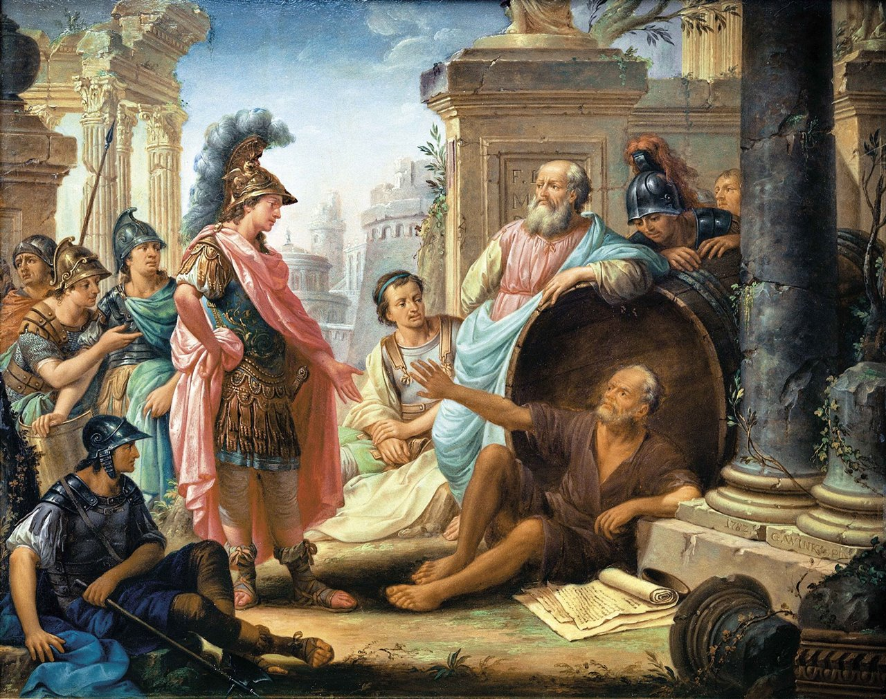

Diógenes de Sinope (El Perro)
El pensamiento de Diógenes se centra en la idea de que la verdadera felicidad y libertad se alcanzan únicamente mediante una vida sencilla, natural y despojada de todo artificio social. Influenciado por Sócrates y su discípulo Antístenes, Diógenes llevó al extremo la búsqueda de la virtud como único bien, negando el valor de la riqueza, el poder, los placeres materiales y las normas establecidas por la sociedad, a las que consideraba falsas y corruptas. Para él , vivir conforme a la naturaleza implicaba rechazar todo lo superfluo y vivir de manera autosuficiente, con total franqueza (parresía) y sin vergüenza por lo natural del cuerpo y sus necesidades. Su filosofía no era teórica, sino eminentemente práctica: predicaba con el ejemplo, provocando a los ciudadanos con actos y palabras para desenmascarar su hipocresía. No buscaba fundar una escuela formal, sino hacer que los demás se cuestionaran sus hábitos, creencias y deseos. Con su vida radica l, Diógenes expresó que el sabio es aquel que no necesita nada y que solo quien se libera de las cadenas sociales y materiales puede ser realmente libre y feliz.
Obras atribuidas
Diógenes no dejó obras escritas (o si las escribió, se perdieron). Lo que se sabe de él proviene principalmente de Diógenes Laercio, un escritor del siglo III d.C. que recopiló biografías de los filósofos griegos
También se le han atribuido (de forma dudosa) algunas cartas y diálogos satíricos, pero ninguna obra auténtica ha sobrevivido.
Encuentros con Alejandro Magno
Uno de los episodios más famosos y simbólicos de la historia de la filosofía es el encuentro entre Diógenes y Alejandro Magno, ocurrido en Corinto alrededor del año 336 a.C.
- —“Soy Alejandro el Grande. Pídeme lo que quieras.”
—Diógenes respondió: “Apártate, que me tapas el sol.”
Alejandro quedó impresionado por la libertad y altivez del filósofo, y comentó:
- —“Si no fuera Alejandro, querría ser Diógenes.”
Esta escena simboliza el choque entre el poder imperial y la sabiduría independiente. Mientras Alejandro poseía el mundo, Diógenes era dueño de sí mismo, y por tanto más libre.
Legado
su vida misma fue su enseñanza. Como figura central del cinismo, influyó decisivamente en la filosofía helenística, especialmente en el estoicismo, que heredó de él la idea de la autosuficiencia, la indiferencia ante los bienes externos y la primacía de la virtud sobre cualquier posesión material. Su ejemplo inspiró a filósofos como Crates de Tebas y posteriormente a pensadores como Epicteto, Séneca y Marco Aurelio. También dejó huella más allá de la filosofía, anticipando actitudes críticas hacia el poder, la riqueza, la autoridad y las normas sociales que se reflejan en corrientes posteriores como el anarquismo, el ascetismo cristiano y la crítica moderna a la sociedad de consumo. Su célebre encuentro con Alejandro Magno simboliza la superioridad del sabio libre frente al poderoso dominado por sus deseos. En resumen, Diógenes encarnó la figura del filósofo como provocador y despertador de conciencias, y su legado sigue vigente como emblema de la libertad interior, la vida austera y la coherencia radical entre pensamiento y acción.